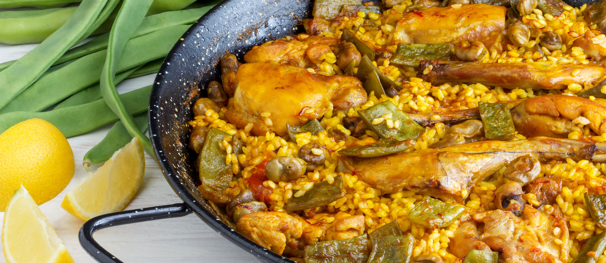
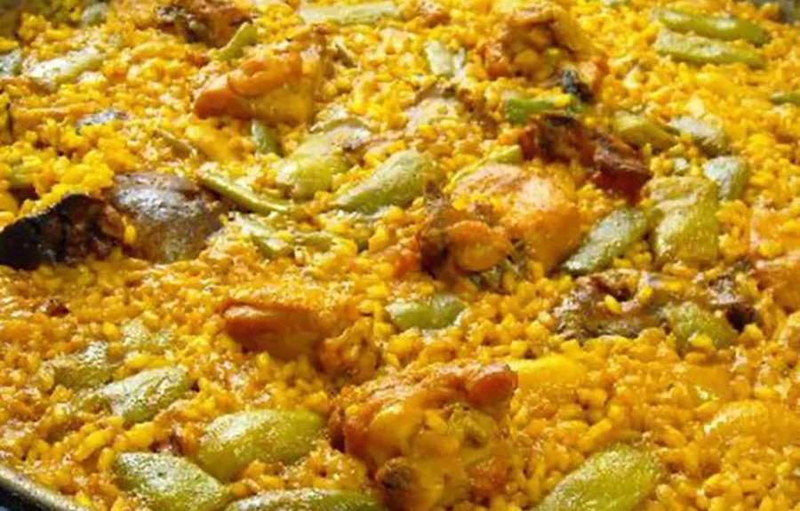
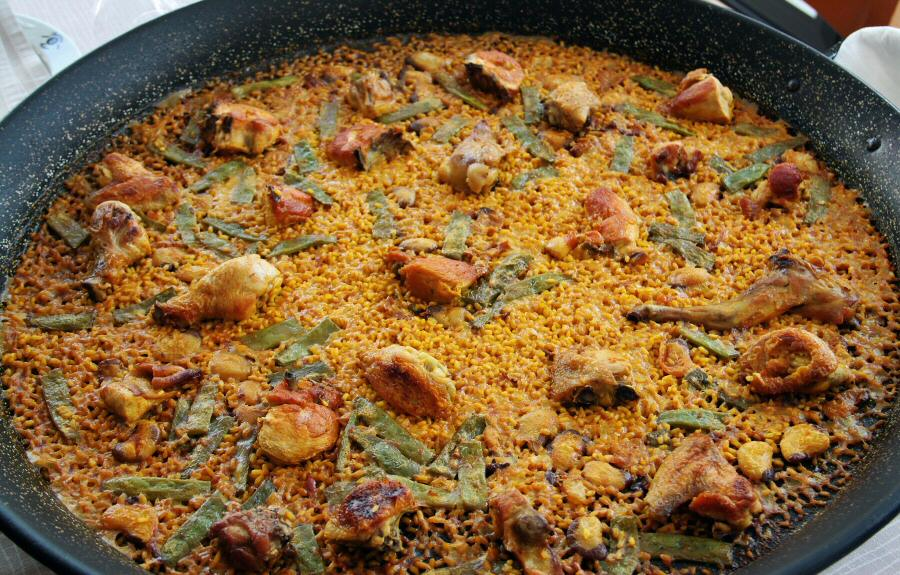
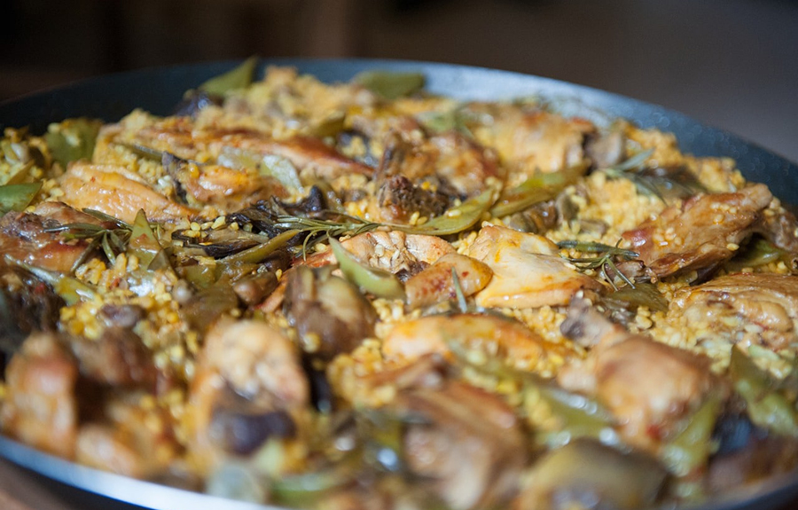

Paella valenciana
La paella valenciana es uno de los platos más representativos de la gastronomía española y, en particular, de la tradición culinaria valenciana.

Origen y tradición
La paella tiene su origen en las zonas rurales de Valencia, donde se cocinaba con ingredientes disponibles en el entorno: arroz, verduras, carne y agua.
Su preparación ha evolucionado con el tiempo, pero sigue existiendo una fuerte defensa de la receta tradicional frente a versiones más modernas o adaptadas.
Ingredientes principales
- Arroz
- Pollo
- Conejo
- Judía verde
- Garrofó
- Tomate
- Azafrán
- Agua
- Aceite de oliva
Proceso de elaboración
- Sofreír la carne en aceite de oliva.
- Añadir las verduras y el tomate.
- Incorporar el agua y dejar cocer.
- Añadir el arroz y distribuirlo de manera uniforme.
- Cocer hasta que el arroz esté en su punto.
Galería



Vídeo
Conclusión
La paella valenciana es mucho más que una receta: es un símbolo cultural y social profundamente arraigado en el territorio.